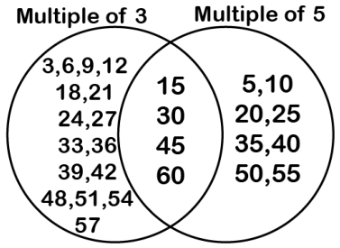
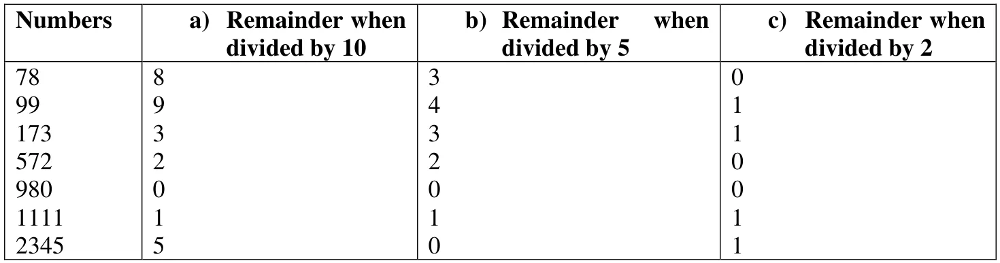
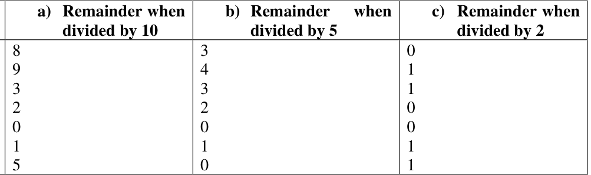

Prime Time
Section 5.1
Page no. 108
Figure it out
Q.1. At what number is ‘idli-vada’ said for the 10th time?
Ans. 150.
Q.2. If the game is played for the numbers from 1 till 90, find out:
a. How many times would the children say ‘idli’ (including the times they say ‘idli-vada’)?
Ans. 30 times.
b. How many times would the children say ‘vada’ (including the times they say ‘idli-vada’)?
Ans. 18 times.
c. How many times would the children say ‘idli-vada’?
Ans. 6 times.
Q.3. What if the game was played till 900? How would your answers change?
Ans. If the game was played till 900, idli-vada would be said 60 times by the children. ‘Vada’ will be said 180 time and ‘idli’ will be said 300 times.
Q.4. Is this figure somehow related to the ‘idli-vada’ game? Hint: Imagine playing the game till 30. Draw the figure if the game is played till 60.
Ans. Yes, the common numbers represent the numbers when to say ‘idli-vada’.

Page no. 109
Which of the following could be the other number: 2, 3, 5, 8, 10?
Ans. The other number will be 8.
Page no. 110
Q. What jump size can reach both 15 and 30? There are multiple jump sizes possible. Try to find them all.
Ans. Jump size of 3 or 5 will take us to 15 & 30.
Other possible jump sizes are 1, 15.
Q.1. Is there anything common among the shaded numbers?
Ans. All shaded numbers are multiples of 3.
Q.2. Is there anything common among the circled numbers?
Ans. All circled numbers are multiples of 4.
Q.3. Which numbers are both shaded and circled? What are these numbers called?
Ans. 36, 48, 60. These numbers are called common multiples of 3 and 4.
Section 5.1
Page no. 110
Figure it out
Q.1. Find all multiples of 40 that lie between 310 and 410.
Ans. Multiples of 40 that lie between 310 and 410 are:
320, 360, 400.
Q.2. Who am I?
a. I am a number less than 40. One of my factors is 7. The sum of my digits is 8.
b. I am a number less than 100. Two of my factors are 3 and 5. One of my digits is 1 more than the other.
Ans. a. 35
b. 45
Q.3. A number for which the sum of all its factors is equal to twice the number is called a perfect number. The number 28 is a perfect number. Its factors are 1, 2, 4, 7, 14 and 28. Their sum is 56 which is twice 28. Find a perfect number between 1 and 10.
Ans. 6.
Q.4. Find the common factors of:
a. 20 and 28 b. 35 and 50
c. 4, 8 and 12 d. 5, 15 and 25
Ans. a. Common factors of 20 and 28 = 1, 2, 4.
b. Common factors of 35 and 50 = 1, 5.
c. Common factors of 4, 8 and 12 = 1, 2, 4.
d. Common factors of 5, 15 and 25 = 1, 5
Q.5. Find any three numbers that are multiples of 25 but not multiples of 50.
Ans. Some such numbers are: 25, 75, 125, 175.
Q.6. Anshu and his friends play the ‘idli-vada’ game with two numbers, which are both smaller than 10. The first time anybody says ‘idlivada’ is after the number 50. What could the two numbers be which are assigned ‘idli’ and ‘vada’?
Ans. 7, 8
8, 9
(Try for other possibility)
Q.7. In the treasure hunting game, Grumpy has kept treasures on 28 and 70. What jump sizes will land on both the numbers?
Ans. The jump sizes are 1, 2, 7 or 14
Q.8. In the diagram below, Guna has erased all the numbers except the common multiples. Find out what those numbers could be and fill in the missing numbers in the empty regions.
Ans. Multiples of 3 Multiples of 4
Think of some more.
Q.9. Find the smallest number that is a multiple of all the numbers from 1 to 10 except for 7.
Ans. 360
Q.10. Find the smallest number that is a multiple of all the number from 1 to 10.
Ans. 2520
Section 5.2
Page No. 113
Q. How many prime numbers are there from 21 to 30? How many composite numbers are there from 21 to 30?
Ans. Prime numbers from 21 to 30: 2 (23, 29)
Composite numbers from 21 to 30: 8
Page No. 114
Figure it out
Q.1. We see that 2 is a prime and also an even number. Is there any other even prime?
Ans. No.
Q.2. Look at the list of primes till 100. What is the smallest difference between two successive primes? What is the largest difference?
Ans. The smallest difference between two successive primes is one \((3-2=1)\) the largest difference is 8 \((97-89)\).
Q.3. Are there an equal number of primes occurring in every row in the table on the previous page? Which decades have the least number of primes? Which have the most number of primes?
Ans. No. The least number of primes occur in the decades 91 to 100 and most number of primes and occur in the decades 1 to 10, 11 to 20.
Q.4. Which of the following numbers are prime: 23, 51, 37, 26?
Ans. 23 and 37.
Q.5. Write three pairs of prime numbers less than 20 whose sum is a multiple of 5.
Ans. Pairs of prime numbers less than 20 whose sum is a multiple of 5 are
(2, 3), (3, 7), (2, 13)
(Try for other possibilities).
Q.6. The numbers 13 and 31 are prime numbers. Both these numbers have same digits 1 and 3. Find such pairs of prime numbers up to 100.
Ans. 17 and 71, 37 and 73, 79 and 97.
Q.7. Find seven consecutive composite numbers between 1 and 100.
Ans. 90, 91, 92, 93, 94, 95, 96.
Q.8. Twin primes are pairs of primes having a difference of 2. For example, 3 and 5 are twin primes. So are 17 and 19. Find the other twin primes between 1 and 100.
Ans. 3 and 5, 5 and 7, 11 and 13, 17 and 19, 29 and 31, 41 and 43, 59 and 61, 71 and 73.
Q.9 Identify whether each statement is true or false. Explain.
a. There is no prime number whose units digit is 4.
b. A product of primes can also be prime.
c. Prime numbers do not have any factors.
d. All even numbers are composite numbers.
e. 2 is a prime and so is the next number, 3. For every other prime, the next number is composite.
Ans. a. True, unit digit 4 means even number. We know that 2 is the only even prime number.
b. False, product of primes becomes a composite number.
c. False, prime numbers have exactly two factors: 1 and the number itself.
d. False, all even numbers except 2 are composite numbers
e. True, as every pair, other than (2, 3), contains an even number which is a composite number.
Q.10. Which of the following numbers is the product of exactly three distinct prime numbers: 45, 60, 91, 105, 330?
Ans. \(105 = 3 \times 5 \times 7\) is the only number which is the product of three distinct prime numbers.
Q.11. How many three-digit prime numbers can you make using each of 2, 4 and 5 once?
Ans. None
Q.12. Observe that 3 is a prime number, and \(2 \times 3 + 1 = 7\) is also a prime. Are there other primes for which doubling and adding 1 gives another prime? Find at least five such examples.
Ans. Yes, \(11 = 2 \times 5 + 1\), \(47 = 2 \times 23 + 1\), \(83 = 2 \times 41 + 1\), \(23 = 2 \times 11 + 1\), \(59 = 2 \times 29 + 1\)
(Try other possibilities.)
Section 5.3
Page No. 115
Where should Grumpy place the treasures so that Jumpy cannot reach both the treasures?
Check if these pairs are safe:
a. 15 and 39 b. 4 and 15
c. 18 and 29 d. 20 and 55
Ans. Safe pairs are: 4 and 15, 18 and 29.
Page no. 116
Q. Which of the following pairs of numbers are co-prime?
a. 18 and 35 b. 15 and 37 c. 30 and 415
d. 17 and 69 e. 81 and 18
Ans. The pairs of co-prime numbers are:
a. 18 and 35
b. 15 and 37
d. 17 and 69
Q. While playing the ‘idli-vada’ game with different number pairs, Anshu observed something interesting!
1. Sometimes the first common multiple was the same as the product of the two numbers.
2. At other times the first common multiple was less than the product of the two numbers.
Find examples for each of the above. How is it related to the number pair being co-prime?
Ans. 1. Examples when the first common multiple is the product of the two numbers:
3, 5; 3, 7 and 4, 9.
2. Examples when the first common multiple is less than the product of the two numbers:
3, 6; 3, 12 and 6, 15
Whenever the number pair is co-prime the first common multiple is the product of the two numbers.
Section 5.4
Page no. 120
Figure it out
Q.1. Find the prime factorisations of the following numbers: 64, 104, 105, 243, 320, 141, 1728, 729, 1024, 1331, 1000.
Ans. \(64 = 2 \times 2 \times 2 \times 2 \times 2 \times 2\)
\(104 = 2 \times 2 \times 2 \times 13\)
\(105 = 3 \times 5 \times 7\)
\(243 = 3 \times 3 \times 3 \times 3 \times 3\)
\(320 = 2 \times 2 \times 2 \times 2 \times 2 \times 2 \times 5\)
\(141 = 3 \times 47\)
\(1728 = 2 \times 2 \times 2 \times 2 \times 2 \times 2 \times 3 \times 3 \times 3\)
\(729 = 3 \times 3 \times 3 \times 3 \times 3 \times 3\)
\(1024 = 2 \times 2 \times 2 \times 2 \times 2 \times 2 \times 2 \times 2 \times 2 \times 2\)
\(1331 = 11 \times 11 \times 11\)
\(1000 = 2 \times 2 \times 2 \times 5 \times 5 \times 5\)
Q.2. The prime factorisation of a number has one 2, two 3s, and one 11. What is the number?
Ans. \(198 = 2 \times 3 \times 3 \times 11\)
Q.3. Find three prime numbers, all less than 30, whose product is 1955.
Ans. \(1955 = 5 \times 17 \times 23\)
Q.4. Find the prime factorisation of these numbers without multiplying first
a. \(56 \times 25\) b. \(108 \times 75\) c. \(1000 \times 81\)
Ans.
a. \(56 \times 25 = 2 \times 2 \times 2 \times 7 \times 5 \times 5\)
b. \(108 \times 75 = 2 \times 2 \times 3 \times 3 \times 3 \times 3 \times 5 \times 5\)
c. \(1000 \times 81 = 2 \times 2 \times 2 \times 3 \times 3 \times 3 \times 3 \times 5 \times 5 \times 5\)
Q.5. What is the smallest number whose prime factorisation has:
a. three different prime numbers?
b. four different prime numbers?
Ans. a. \(2 \times 3 \times 5 = 30\)
b. \(2 \times 3 \times 5 \times 7 = 210\)
Page no. 122
Figure it out
Q.1. Are the following pairs of numbers co-prime? Guess first and then use prime factorisation to verify your answer.
a. 30 and 45 b. 57 and 85
c. 121 and 1331 d. 343 and 216
Ans. a. No
\(30 = 2 \times 3 \times 5\)
\(45 = 3 \times 3 \times 5\)
b. Yes
\(57 = 19 \times 3\)
\(85 = 17 \times 5\)
c. No
\(121 = 11 \times 11\)
\(1331 = 11 \times 11 \times 11\)
d. Yes
\(343 = 7 \times 7 \times 7\)
\(216 = 2 \times 2 \times 2 \times 3 \times 3 \times 3\).
Q.2. Is the first number divisible by the second? Use prime factorisation.
a. 225 and 27 b. 96 and 24
c. 343 and 17 d. 999 and 99
Ans. a. No \(\left(\dfrac{3 \times 3 \times 5 \times 5}{3 \times 3 \times 3}\right)\)
b. Yes \(\left(\dfrac{2 \times 2 \times 2 \times 2 \times 2 \times 3}{2 \times 2 \times 2 \times 3}\right)\)
c. No \(\left(\dfrac{7 \times 7 \times 7}{17}\right)\)
d. No \(\left(\dfrac{3 \times 3 \times 3 \times 3 \times 37}{3 \times 3 \times 11}\right)\)
Q.3. The first number has prime factorisation \(2 \times 3 \times 7\) and the second number has prime factorisation \(3 \times 7 \times 11\). Are they co-prime? Does one of them divide the other?
Ans. No, they are not co-prime.
No, one of them is not dividing the other.
Q.4. Guna says, “Any two prime numbers are co-prime”. Is he right?
Ans. Yes, for example 2, 3; 3, 11 (Try other examples)
Section 5.5
Page no. 124
Q. Is 8536 divisible by 4?
Ans. Yes, as 36 is divisible by 4.
Q. Consider these statements:
1. Only the last two digits matter when deciding if a given number is divisible by 4.
2. If the number formed by the last two digits is divisible by 4, then the original number is divisible by 4.
3. If the original number is divisible by 4, then the number formed by the last two digits is divisible by 4.
Do you agree? Why or why not?
Ans. 1. Yes
2. Yes
3. Yes
Yes, we agree.
Consider numbers 124, 364, 4028 etc. These are divisible by 4. Check for more numbers.
Page no. 125
Q. Find numbers between 120 and 140 that are divisible by 8. Also find numbers between 1120 and 1140, and 3120 and 3140, that are divisible by 8. What do you observe?
Ans. The numbers between 120 & 140 divisible by 8 are = 128, 136.
The numbers between 1120 & 1140 divisible by 8 are = 1128, 1136.
The numbers between 3120 & 3140 divisible by 8 are = 3128, 3136.
if the number formed by one’s, ten’s and hundred’s digit is divisible by 8, then the number is divisible by 8.
Q. Change the last two digits of 8560 so that the resulting number is a multiple of 8.
Ans. 8552 is a multiple of 8.
Q. Consider this statement:
1. Only the last three digits matter when deciding if a given number is divisible by 8.
2. If the number formed by the last three digits is divisible by 8, then the original number is divisible by 8.
3. If the original number is divisible by 8, then the number formed by the last three digits is divisible by 8.
Do you agree? Why or why not?
Ans. a. Yes
b. Yes
c. Yes
Yes. Some examples are: 8576, 7648, 5024. Try some more.
Figure it out
Q.1. 2024 is a leap year (as February has 29 days). Leap years occurs in the years that are multiples of 4, except for those years that are evenly divisible by 100 but not 400.
a. From the year you were born till now, which years were leap years?
b. From the year 2024 till 2099, how many leap years are there?
Ans. b. From the year 2024 till 2099, the number of leap years is 19
Q.2. Find the largest and smallest 4-digit numbers that are divisible by 4 and are also palindromes.
Ans. The largest 4-digit number divisible by 4 and also a palindrome: 9999
The smallest 4-digit number divisible by 4 and also a palindrome: 1001.
Q.3. Explore and find out if each statement is always true, sometimes true or never true. You can give examples to support your reasoning.
a. Sum of two even numbers gives a multiple of 4.
b. Sum of two odd numbers gives a multiple of 4.
Ans. a. Sometimes true
Example \(2+6 = 8\), a multiple of 4.
but \(2+4 = 6\), not a multiple of 4.
b. Sometimes true
Example \(1+3 = 4\), a multiple of 4.
but \(1+5 = 6\), not a multiple of 4.
Note: Think of more such examples.
Q.4. Find the remainders obtained when each of the following numbers are divided by i) 10, ii) 5, iii) 2.
78, 99, 173, 572, 980, 1111, 2345
Ans.


Q.5. The teacher asked if 14560 is divisible by all of 2, 4, 5, 8 and 10. Guna checked for divisibility of 14560 by only two of these numbers and then declared that it was also divisible by all of them. What could those two numbers be?
Ans. The two numbers that are sufficient to declare the divisibility of 14560 by 2, 4, 5, 8 and 10 are 5 and 8.
Q.6. Which of the following numbers are divisible by all of 2, 4, 5, 8 and 10: 572, 2352, 5600, 6000, 77622160.
Ans. The numbers divisible by 2, 4, 5, 8 and 10 are:
5600, 6000 and 77622160.
Q.7. Write two numbers whose product is 10000. The two numbers should not have 0 as their unit digit.
Ans. \(10000 = 16 \times 625\).